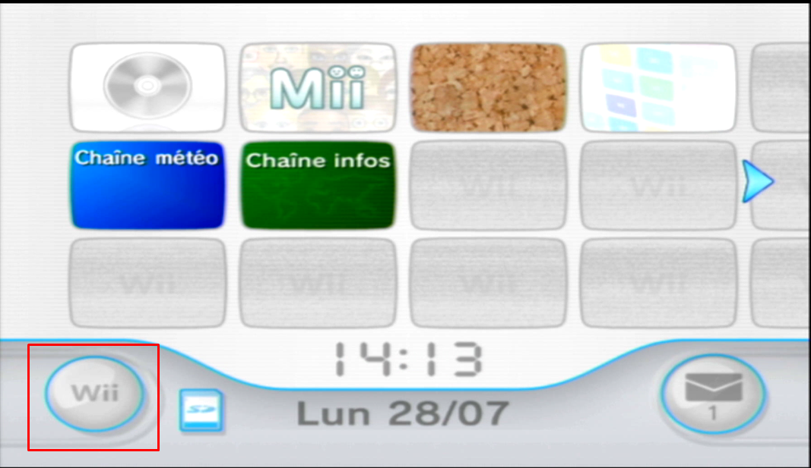
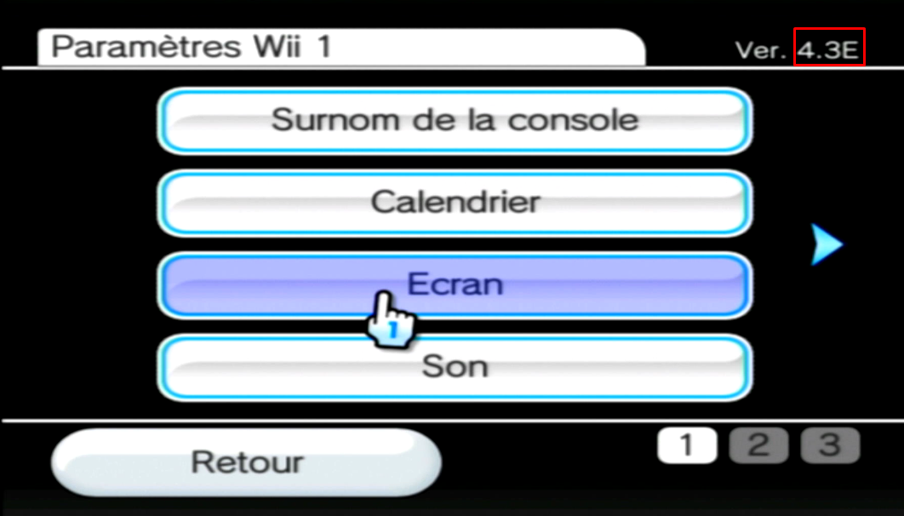

Sélectionner la région, ainsi que la version de votre Wii.
Sélectionner ces paramètres
Comment savoir la version/région de ma Wii ? ►
Si vous souhaitez connaitre la version/région de votre Wii, vous pouvez aller dans les options Wii, puis dans les paramètres Wii

En haut à gauche des paramètres est noté votre numéro de version, ainsi que la région (qui est la lettre à côté du numéro de version)
